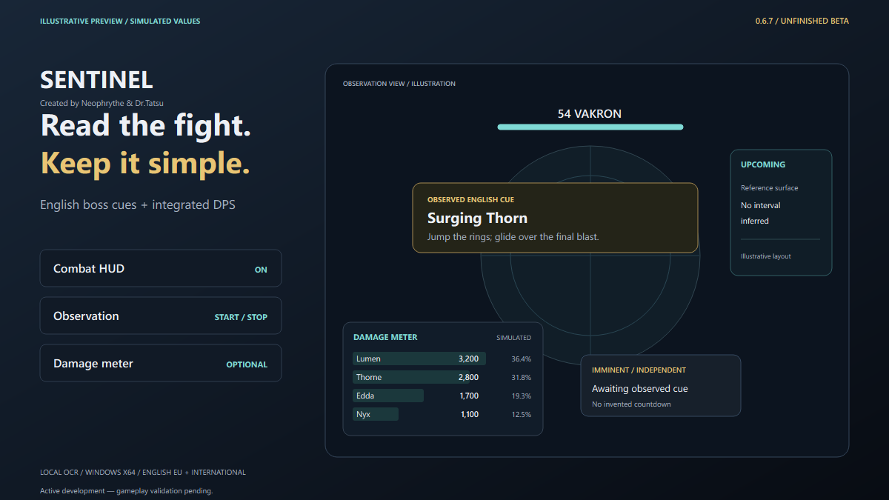
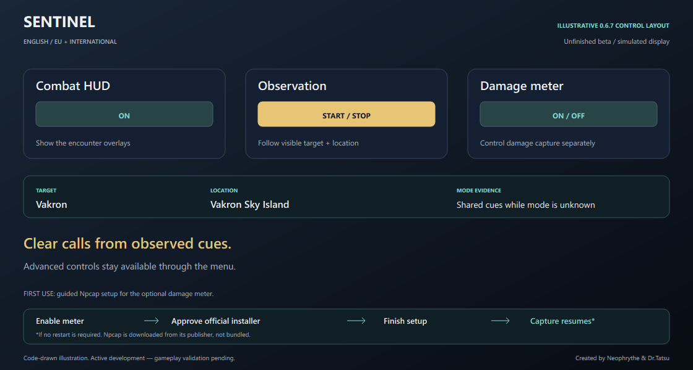
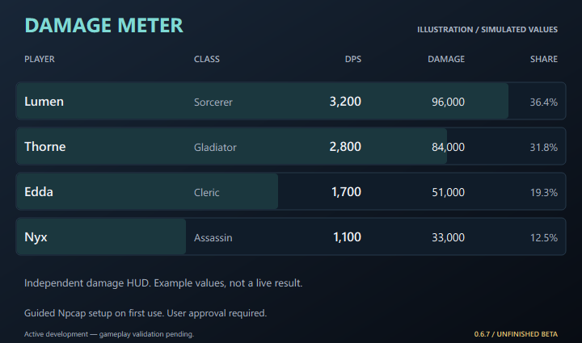

01 / DISPLAY
Combat HUD
Show or hide the encounter overlays. Give action warnings, Upcoming and Imminent their own space on the screen.
Start observation. Sentinel follows visible English target names and location labels, selects compatible encounters, and brings observed boss cues into view. A usable visible cast timer or changing cast bar can supply an estimated cast end. Keep the integrated damage meter one toggle away.
0.6.8 — Unfinished Beta. Active development with partial boss-mechanic coverage. Gameplay validation is pending; source compilation and package integrity have been checked.

Retained 0.6.7 illustrative preview drawn in SVG. Simulated readings and layout; no 0.6.8 application screenshot or live encounter is shown.
Choose whether the combat HUD is visible, start or stop screen observation, and switch the damage meter on or off. Profile, context and standard HUD-region discovery run automatically in beginner mode.
Show or hide the encounter overlays. Give action warnings, Upcoming and Imminent their own space on the screen.
Read the foreground English game HUD. Match the visible target and location; keep ordinary enemies quiet.
Enable damage capture independently. If Npcap is absent, choose guided setup and complete its normal installer. The meter remains optional.

For a confirmed target and one uniquely associated English skill cue, repeated independent measurements of explicit remaining seconds or a changing cast bar can produce a HUD countdown marked cast (est.). A skill name alone never starts the clock.
Expert Cues provides a separate cast-end heads-up, defaulting to 3 seconds. Set it from 0 to 30 seconds; zero disables that heads-up. It estimates the end of the measured cast, with no individual wave-impact or recurring fight schedule inferred.
The static reference links 550 skill IDs to 209 profiles. These are source-inventory counts, not verified live casts or complete boss timelines. Expert Cues, Boss library and Game Data show the linked facts and their limits.
Hidden gauges, ambiguous cues and unsupported bar geometry can prevent measurement. Fresh timing evidence must keep arriving; frozen frames cannot keep an estimate alive. Profile changes, focus loss and stopping observation clear cast state.
The integrated damage meter has its own control and movable HUD. Keep the encounter call clear while damage sits where you want it.
An existing Npcap installation skips setup. The installer is not bundled. Cancelling, declining elevation or a setup failure leaves capture off while screen OCR remains available. If Windows needs a restart, the meter stays off; restart Windows yourself, then enable the meter again.
Names and classes depend on received metadata. If you started capture after login, keep it enabled through a login or area change; unknown actors retain numeric labels. The meter aggregates captured actors and targets, including possible non-party players. An ordinary boss death does not reset every fight. Current EU damage accuracy remains unverified.

Put the action near your focus, Upcoming well to the right, and damage in its own corner. Explore the movable HTML presentation and toggle the simulated meter.
The local library contains 1,002 target/profile identities. Of those, 223 have some source-backed warning support and 779 currently provide identity recognition only. These counts do not establish live-validated mechanics for every boss.
54 world entries map to 51 profiles. Exact names, maps and NPC variants help establish identity; ordinary and summon variants remain exclusions.
137 world / higher-GS targets: 72 have some warning support and 65 remain identity-only. Gear-score values describe source entrance requirements.
Published advice is joined to exact English skill names only after local NPC ownership is established. Cast-end estimates require measured timing evidence. Automatic mode does not invent wave intervals or enrage times.
If difficulty remains unknown, only identical safe skill cues shared by compatible variants can be used. Variant-specific HP phases stay out of that common-cues view.
Extract the complete archive, launch Start-AION-Sentinel.cmd and begin observation with the English game in the foreground. Switch Damage meter on if wanted; guided setup can install the separate Npcap capture driver with your consent.
95,352,628 bytes · 90.94 MiB · 430 files · English Windows x64 package
Archive: AION-Sentinel-0.6.8-beta-windows-x64.7z
SHA-256: 14eec381b0baec79440c56560f904a4f03cd05af0af2a20241a1c0343bdc9287Version 0.6.8 is Unfinished Beta. Active development — gameplay validation pending. Keep the complete extracted folder together.